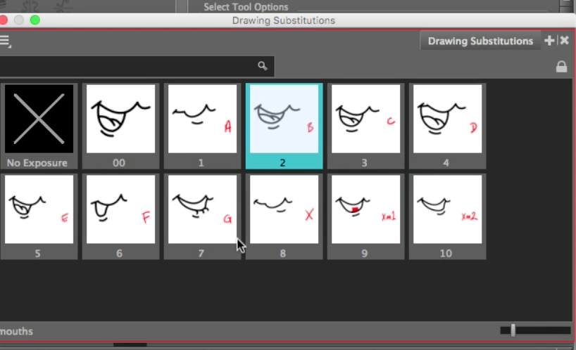
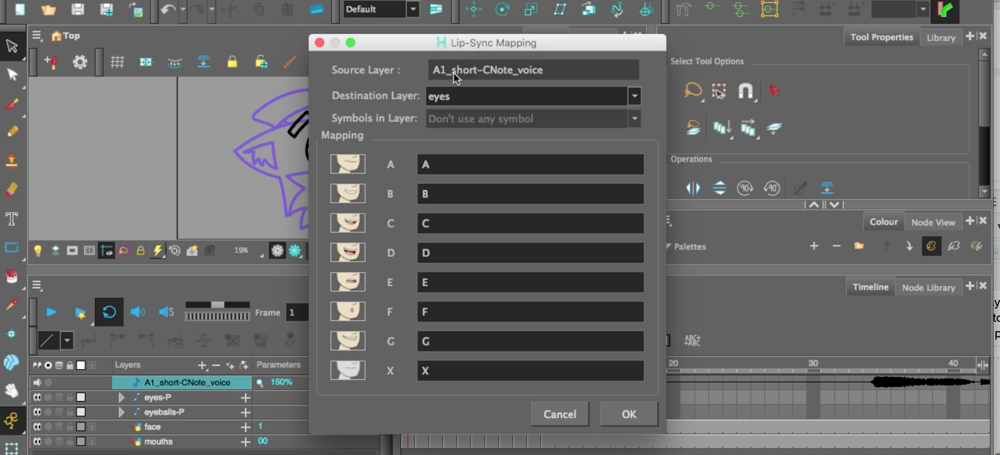
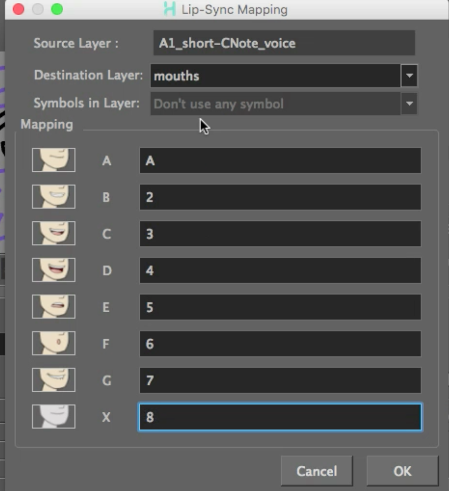

About this Lesson:
In this lesson you will learn how automate a lip sync for CNote, you will be giving CNote a voice! You will learn how to create mouth shapes, as known as Phonemes, import audio, and have Harmony do all the work to automate the lip-sync. You will need to tweak any errors in the lip-sync and apply some fabulous Lip-Sync tips in the Lip Sync 101 video. The video tutorial of Automated Lip-Sync is at the bottom of this lesson.
Lesson Duration: 7 hours
Harmony Topics:
- Mouth Chart: Adding a lip-sync to your animation is essential to making your characters seem alive. However, it is also a particularly tedious part of the animation process. To solve this problem, Harmony provides an automatic lip-sync detection feature. This feature analyzes the content of a sound track in your scene and associates each phoneme it detects with one of the mouth shapes in the following mouth chart, which is a standard mouth chart in the animation industry.
- Sound Element Editor: When you double-click on a sound layer in the Timeline view, the Sound Element Editor appears.
- Auto Lip-Sync Detection: There are several places where you can perform a lip-sync detection: Layer Properties view, Timeline view, Xsheet view and Sound Element editor.
- Toon Boom Help: Toon Boom Harmony Premium is an animation and digital content creation tool that offers you a wide array of features and options. Harmony is packaged in several different modules and allows you to create animation using the technique of your choice.
- Lip-Sync Mapping: Harmony can automatically map drawings in an element to the mouth chart you have generated for a sound. This can save time when you are lip-synching a voice track. In the Layer Properties view, you can identify each lip drawing of a character. Harmony then automatically labels all of the cells in the character's element with the appropriate name.
Task:
-
Download the support files (Lip Sync) from the Lesson Files.
-
Begin by watching and take notes on the Lip Sync 101 video (below) and the topics presented in this lesson.
-
Now watch, complete and take notes on the Automatic Lip-Sync video and the topics presented in this lesson.
-
Create your own animated version of CNote speaking in Harmony by following the steps presented in the video. Be sure to save and export your Harmony file as: YourName_Lip Sync in your Documents folder. Be sure to continue to take notes in your sketchbook/notebook on how to use Harmony and any animation terminology as it will help you prepare for your certification exam at the end of this course.
- Unzip the support files into your Documents folder on your computer.
- Launch Toon Boom Harmony, and open 09_auto-lipsync.xstage
- Play, complete and take notes on the Automatic Lip Sync video (above) and the topics presented in this lesson video tutorial.
- Investigate the layout and art on the layers on the Timeline, you should have a face layer, and the dynamic eye layers from the previous lesson..
- Go to the mouth layer and scrub through the drawing substitutions already provided. These are labeled based on the Harmony Mouth Chart, not the phonemes.
- Go to the main menu and select Windows/Drawing Substitutions to see all the created mouth shapes.

- Go to File/Import/Sound and import the A1_Short-Cnote_voice file.
- Click open.
- A new sound layer will appear on your Timeline.
- Go to sound Layer, double click the Musical Note icon next to the layer name. This will open the Sound Element Editor.
- In the Sound Element Editor you will notice we need 395 frames in our Timeline. To change the number of frames go to the Main Menu/Scene/Scene Length and change 60 to 395. Click ok.
- Go to the sound layer in the Timeline. Right click anywhere on the frames of the layer and select Lip-Sync/Auto Lip-Sync Detection.
Hint: For best results, use sound without background noise.
- Double click the Musical Note icon in the layer and play the sound and watch how the Harmony pre-designed character tries to automate based on the sound file. Harmony does a great estimation of the placement of phonemes.
- Shift click the Face and Mouth Layers. Right click on frame 395 and click Extend Exposure.
- Repeat with the Eyes and Eyeballs Peg Layers.
- Right click on sound frames, go to Lip-Sync/Map Lip-Sync.
- A Lip-Sync Mapping editor will pop open.

- Make sure the Source Layer is the A1_short-CNote_voice audio
- The Destination folder should be set to mouths.
- Go to the mouth layer and select frame 2 with the red letter A on the bottom right corner.
- There are 2 ways to assign the mouth shape.
- Option 1: Right click and go to Drawing/Rename Drawing. Name it A, click Ok.
- Option 2: For the rest of the names, go back to Lip-Sync/Map Lip-Sync.
- Replace the letters with the drawing names, for example, B will be changed to 2, C will be changed to 3, etc. Repeat until you add 8 in the X input area. Click Ok.
NOTE: Often times, mouth drawings will be named phonetically for the sounds the mouth will be making with that drawing for ease of use. In this case, numbers will work just fine.

- Enable sound Scrubbing in your Timeline. This will enable you to hear the sound.
- Scrub the Playhead along your Timeline to preview the automated lip-sync. Your mouth shapes should be assigned to the mouth chart. Note you may need to do a few tweaks.
Part 2 - Tweaking your Lip-Sync:
- Manually replace drawings on the mouths layer using the Drawing Substitution window to refine your lip-sync. Most sounds will need to be assigned to numerous frames.
- Be patient and scrub through the entire timeline to get it to what you like.
- We are going to replace the audio file with numerous audio tracks (dialogue with music).
- Delete the sound layer on the Timeline.
- Import the other sound file in the Support folder.
- Press Play to test out your new animated lip-sync.
- Import one new audio file into your project and apply your lip-syncing skills (not in video).
- Add a Colour Card.
- Save your Harmony file as: YourName_lipsync.xstage in your Documents folder.
- Export your Harmony file as a movie file: YourName_lipsync in your Documents folder.
- Please submit your animated video using the Submit File section on the bottom of this page.